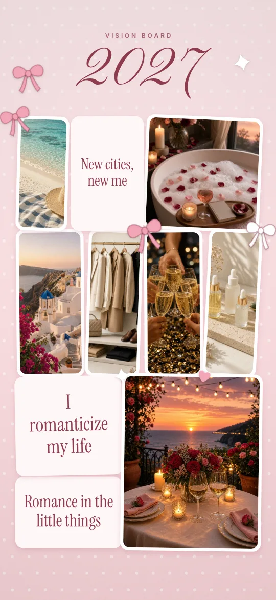

2027 AESTHETIC · COQUETTE
Coquette vision board wallpaper for your 2027 lock screen
Bows, pink and soft romantic photos make coquette one of the most saved vision board styles on Pinterest. Here is how to make a coquette board that still keeps your 2027 goals clear, and how to put it on your lock screen.



The Coquette look in one line
Blush pink, ballet-slipper pink, cream, and white with a touch of cherry red. Script fonts and little ribbon bows tie it together.
What to put on it
- Fresh peonies or a rose bouquet for love and romance
- A bubble bath with candles for self-care
- Pink shopping bags and pearls for treat-yourself goals
- A Paris café or cherry blossoms for travel
- Girls’ night or a toast for friendship
In Glowboard you just tap the goals you want (travel, money, love, style and more) and the matching photos and affirmations are added for you. You can also add your own photos. They stay on your phone.
Tips for a board you will actually look at
- Keep it to 6–8 photos so the bows have space to breathe.
- Pair one big script title (“2027”) with 2–3 short affirmations in a serif font.
- Choose soft goals that are still specific, like “Solo trip to Paris in May” or “Save $5k”.
- “Soft love, safe love”
- “I romanticize my life”
- “Love finds me in 2027”
- “Glow up season”
- “Main character energy”
How to set it as your lock screen
iPhone: tap Save image (or long-press and choose “Save to Photos”). Open Photos, tap Share, then Use as Wallpaper. Android: open the image in Gallery or Google Photos, tap ⋮, then Set as wallpaper, then Lock screen.
FAQ
Is the coquette look free?
Yes. Coquette is one of the three free looks in Glowboard. Free downloads include a small watermark, and Pro removes it.
What size is the wallpaper?
The iPhone export is 1179 × 2556 px and the Android export is 1080 × 2400 px. The top area stays clear so your clock does not cover your photos.
More 2027 looks


Glowboard is a free vision board wallpaper maker. There is no sign-up, and your photos never leave your device.